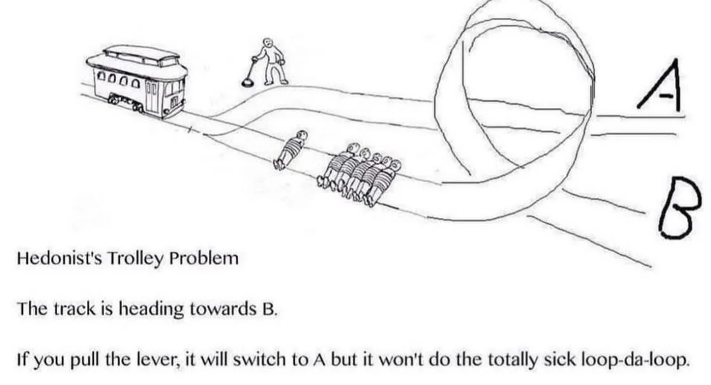

Published July 1, 2025

The trolley problem is perhaps the most famous thought experiment in contemporary moral philosophy. In its simplest form, it asks us to imagine a runaway trolley hurtling down a track toward five people tied onto the track. You stand next to a lever that can divert the trolley onto a side track, where it will instead kill one person. Should you pull the lever?
Alongside the proliferation in trolley problem memes, there has been an explosion in writing on the topic by philosophers. One of the best introductory books on the topic is Francis Kamm’s The Trolley Problem Mysteries. In it, she attempts to find acceptable solutions to the classic case just outlined by thinking up lots and lots of creatively tweaked revisions on the trolley problem which make for thrilling reading, and reasoning our responses to these cases.
One example is to remove the lever and the second track. Instead, we can prevent the trolley killing 5 people only by pushing a large, heavy man onto the track, causing the train to slow down before it hits the 5 but killing him in the process.
Despite mirroring the classic case in important respects, people’s responses often differ markedly. Why? Kamm has many excellent answers.
Another carefully thought-up tweak is the Loop Case in which the switch diverts the trolley onto a side track where a large, heavy man stands; this person blocks the trolley, stopping it from hitting the five on the main track as it loops back around.
Philosopher Mike Otsuka argues that in the loop case, the death of the one person is integral to saving the five, making it a case of intending harm (as a means) rather than just foreseeing it, even though it seems causally similar to the standard switch case where many find it permissible to pull the lever.
For more thought experiments which build like this and become more and more intricate, read The Trolley Problem Mysteries.